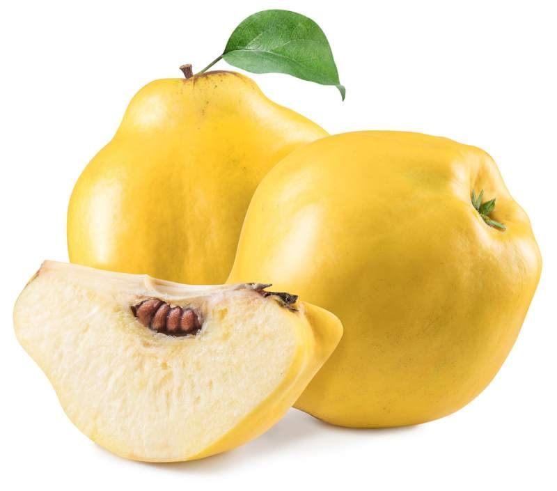

Quince

| Index |
|---|
| Short description |
| Nutritional value |
| Health benefits |
| Best time to eat |
| Who shoud avoid |
| Fun fact |
Short Description
Quince is a hard, yellow fruit that looks similar to a pear or apple. It is rarely eaten raw because of its tough texture and sour taste. Quince is commonly cooked, baked, or made into jams and jellies. It has been used since ancient times for its medicinal properties.
Nutritional Value
| Nutrient | Amount |
|---|---|
| Calories | 57 kcal |
| Carbohydrates | 15 g |
| Dietary Fiber | 1.9 g |
| Vitamin C | 25% |
| Potassium | 197 mg |
| Antioxidants | Present |
Health Benefits
- Improves digestion and prevents stomach disorders
- Supports heart health due to antioxidants
- Boosts immunity
- Supports heart health due to antioxidants
- Reduces inflammation
Best Time to Eat
Quince is best consumed after cooking, preferably during daytime meals.Cooked quince is easier to digest and more beneficial.
Avoid eating quince:
- Raw, if you have digestion problems
- Late at night
Best practice: Eat cooked quince as a dessert or side dish.
Who Should Avoid
- People with weak digestion, if eaten raw
- Those with chronic constipation, in excess
- People allergic to pome fruits
Fun Fact
- Quince was considered the fruit of love in ancient Greece
- The word “marmalade” originally came from quince
- Quince aroma becomes stronger after cooking